Gallery of different plots available with myTAI
Here are example outputs of plotting functions from
myTAIv2.
We hope these plots can inspire your analysis!
Bulk RNA-seq data
example_phyex_set is an example
BulkPhyloExpressionSet object.
To learn more about bringing your dataset into myTAI, follow this
vignette here:
‚Üí üìä
myTAI plots can be modified as a ggplot2 object.
myTAI::plot_signature(example_phyex_set,
show_p_val = TRUE,
conservation_test = stat_flatline_test,
colour = "lavender") +
# as the plots are ggplot2 objects, we can simply modify them using ggplot2
ggplot2::labs(title = "Developmental stages of A. thaliana")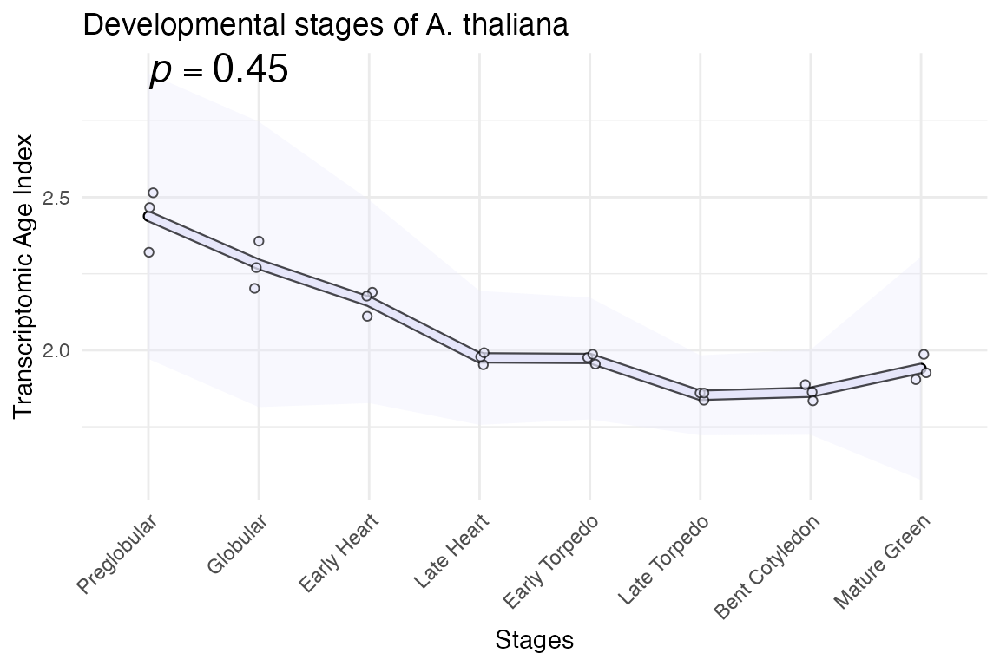
module_info <- list(early = 1:3, mid = 4:6, late = 7:8)
myTAI::plot_signature(example_phyex_set,
show_p_val = TRUE,
conservation_test = stat_reductive_hourglass_test,
modules = module_info,
colour = "lavender")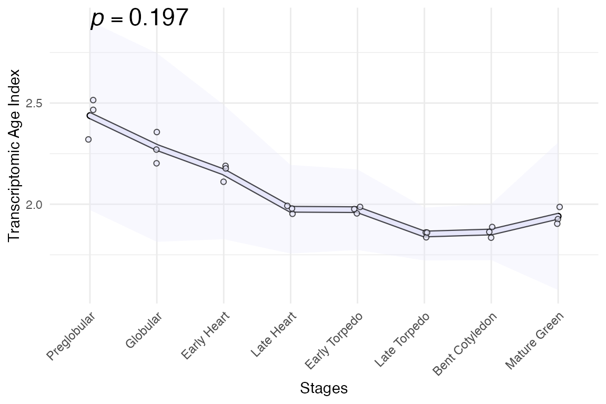
Transformation and robustness checks
See more here:
‚Üí üõ°Ô∏è
myTAI::plot_signature_transformed(
example_phyex_set)## Computing: [========================================] 100% (done)
## Computing: [========================================] 100% (done)
## Computing: [========================================] 100% (done)
## Computing: [========================================] 100% (done)
## Computing: [========================================] 100% (done)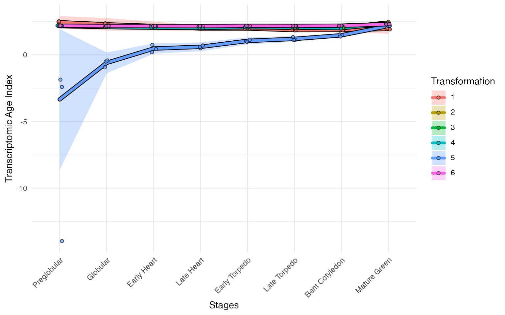
myTAI::plot_signature_gene_quantiles(
example_phyex_set)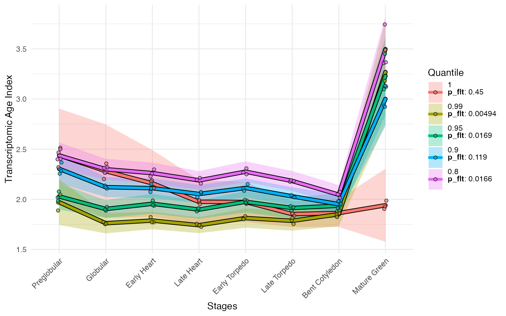
Statistical tests and plotting results
See more here:
‚Üí üìà
myTAI::stat_flatline_test(
example_phyex_set, plot_result = TRUE)
##
## Statistical Test Result
## =======================
## Method: Flat Line Test
## Test statistic: 0.04054987
## P-value: 0.7671146
## Alternative hypothesis: greater
## Data: Embryogenesis 2019
res_flt <- myTAI::stat_flatline_test(example_phyex_set, plot_result = FALSE)
myTAI::plot_cullen_frey(res_flt)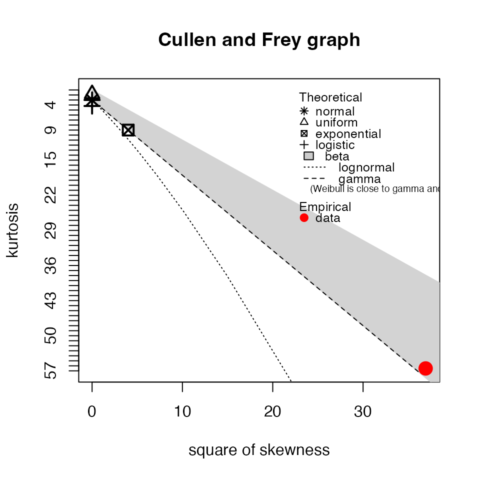
## summary statistics
## ------
## min: 0.0001722894 max: 3.629302
## median: 0.1279055
## mean: 0.2210184
## estimated sd: 0.318763
## estimated skewness: 3.852407
## estimated kurtosis: 23.214
myTAI::plot_null_txi_sample(res_flt) +
ggplot2::guides(x = guide_axis(angle = 90))
module_info <- list(early = 1:3, mid = 4:6, late = 7:8)
myTAI::stat_reductive_hourglass_test(
example_phyex_set, plot_result = TRUE,
modules = module_info)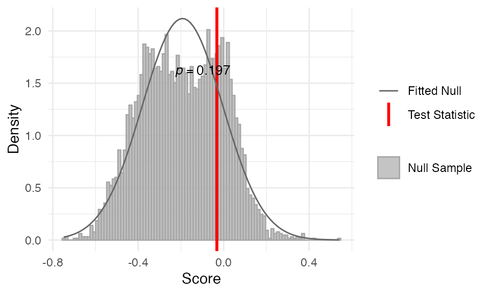
##
## Statistical Test Result
## =======================
## Method: Reductive Hourglass Test
## Test statistic: -0.04442135
## P-value: 0.2179722
## Alternative hypothesis: greater
## Data: Embryogenesis 2019Average gene expression level by phylostratum
myTAI::plot_strata_expression(example_phyex_set)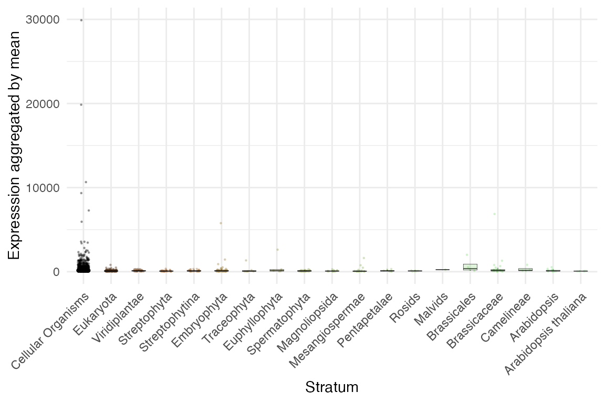
plot_strata_expression with scaled y axis
myTAI::plot_strata_expression(example_phyex_set) +
ggplot2::scale_y_log10() +
ggplot2::labs(x = "Expression aggregated by mean (log-scaled)")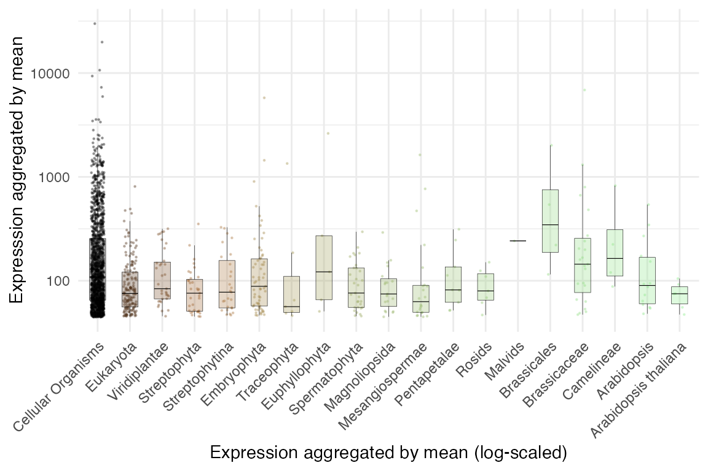
plot_strata_expression with explicit transformation
library(patchwork)
p1 <- myTAI::plot_strata_expression(example_phyex_set |> myTAI::tf(log1p))
# equivalent to
p2 <- example_phyex_set |> myTAI::tf(log1p) |> myTAI::plot_strata_expression()
p1+p2As you can see, both plots are identical. This example demonstrates
that there are multiple ways to achieve the same result through piping
(|>) operator in R. |> is basically the
same as %>%.
Contribution to the overall TAI by phylostratum
myTAI::plot_contribution(example_phyex_set)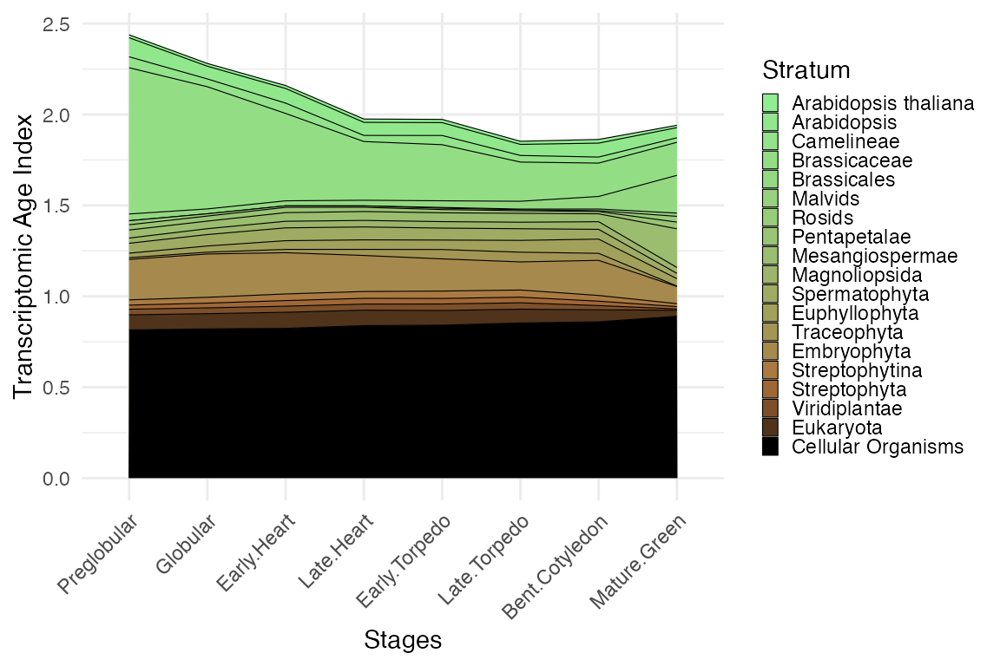
Curious about methods to obtain gene age information? See more
here:
‚Üí üìö
For other analogous methods to assign evolutionary or expression
information to each gene for TDI, TSI etc., see here:
‚Üí üߨ
myTAI::plot_distribution_expression(example_phyex_set)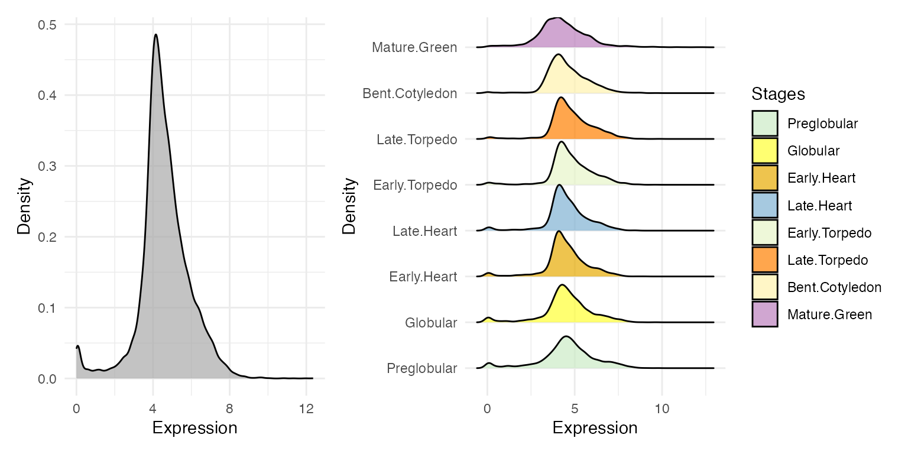
Contribution to the overall TAI by partial TAI (pTAI)
pTAI, or
where
denotes the expression level of a given gene
in sample
,
is its gene age assignment, and
is the total number of genes, is the per-gene contribution to the
overall TAI. (Summing pTAI across all genes
gives in a given sample
gives the overall
)
pTAI QQ plot compares the partial TAI distributions of
various developmental stages against a reference stage (default is stage
1).
myTAI::plot_distribution_pTAI_qqplot(example_phyex_set)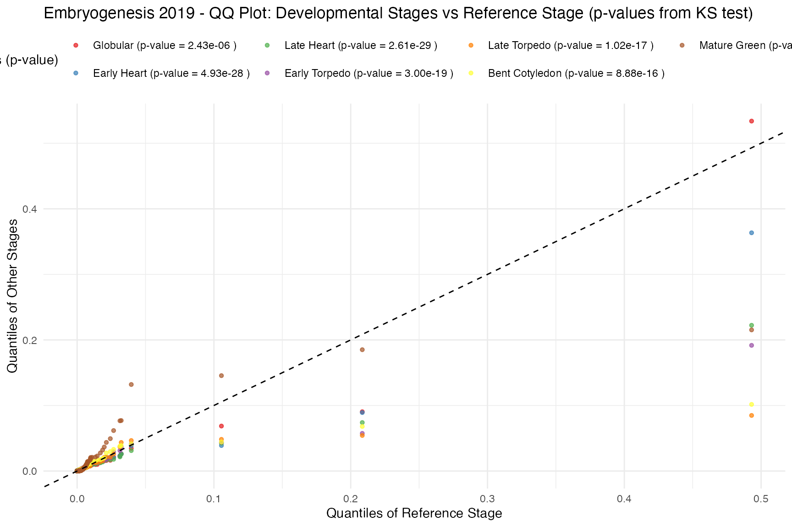
Phylostratum distribution
myTAI::plot_distribution_strata(example_phyex_set@strata) /
myTAI::plot_distribution_strata(
example_phyex_set@strata,
selected_gene_ids = myTAI::genes_top_variance(example_phyex_set, p = 0.95),
as_log_obs_exp = TRUE
) + plot_annotation(title = "Distribution of gene ages (top), Observed vs Expected plot of top 5% variance genes (bottom)")Expression heatmap
myTAI::plot_gene_heatmap(example_phyex_set)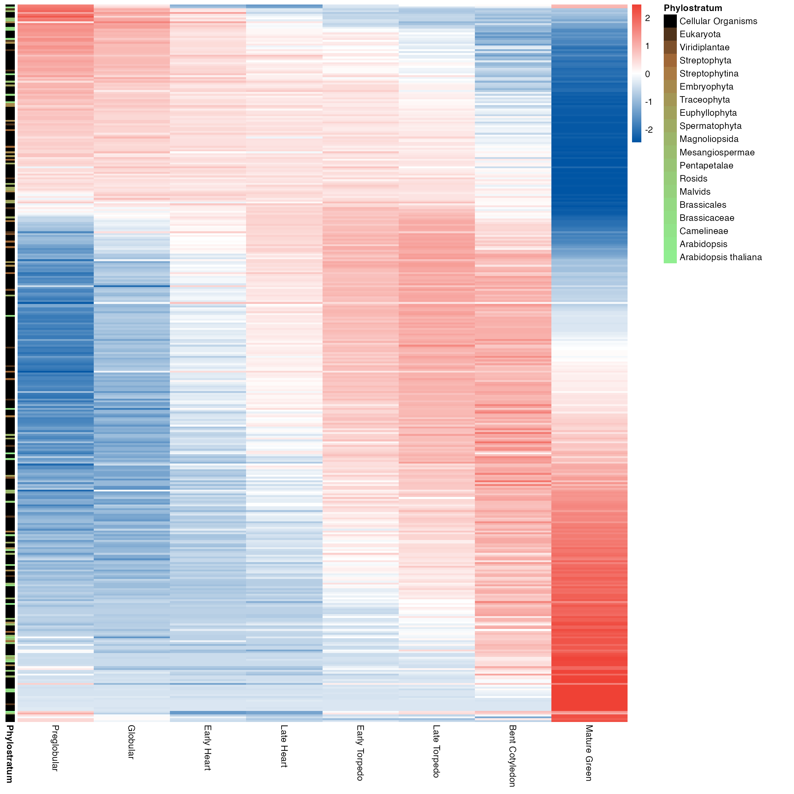
myTAI::plot_gene_heatmap(example_phyex_set, cluster_rows = TRUE, show_reps=TRUE, show_gene_ids=TRUE, top_p=0.005)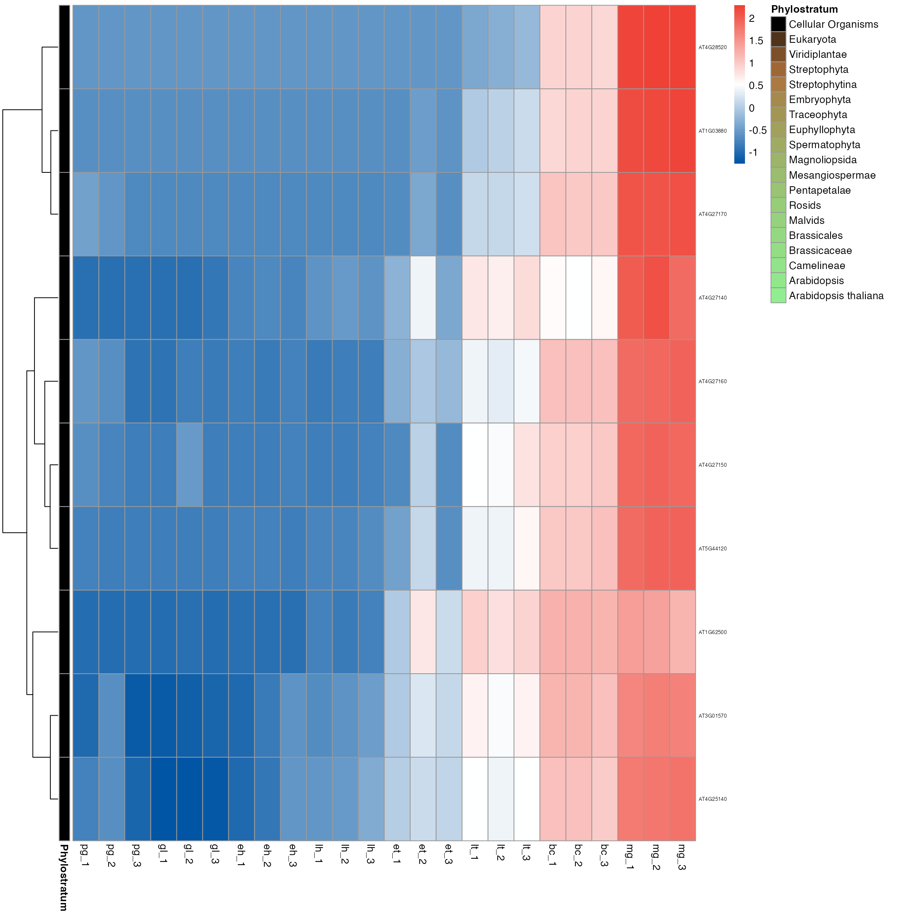
myTAI::plot_gene_heatmap(example_phyex_set, cluster_rows = TRUE, show_reps=TRUE, top_p=0.005, std=FALSE, show_gene_ids=TRUE)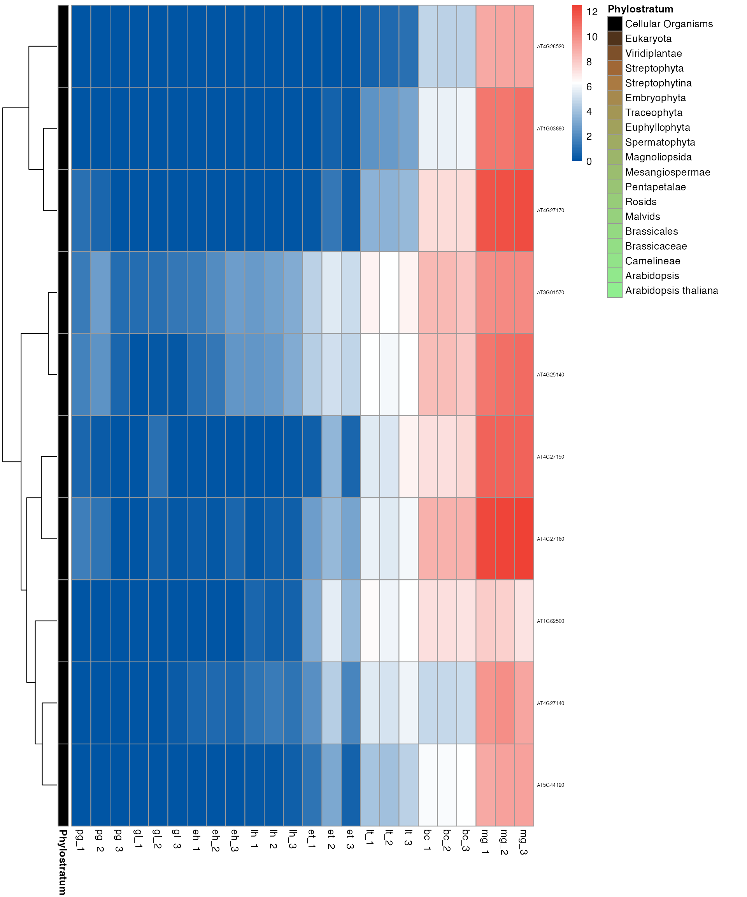
Dimension reduction
At the gene level
myTAI::plot_gene_space(example_phyex_set)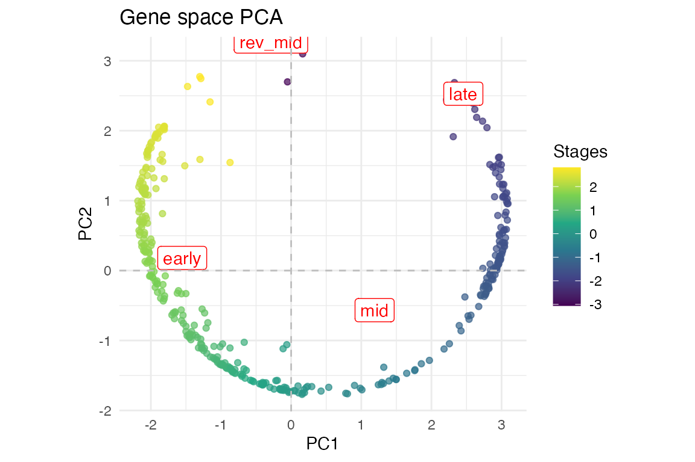
myTAI::plot_gene_space(example_phyex_set,colour_by = "strata")At the sample level
myTAI::plot_sample_space(example_phyex_set) | myTAI::plot_sample_space(example_phyex_set, colour_by = "TXI")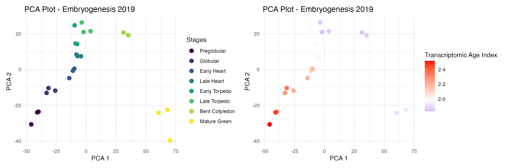
# we can even do a UMAP
myTAI::plot_sample_space(example_phyex_set, method = "UMAP")Inspecting mean-variance relationship
# highlighting top variance genes
top_var_genes <- myTAI::genes_top_variance(example_phyex_set, p = 0.9995)
p1 <- myTAI::plot_mean_var(example_phyex_set)
p2 <- myTAI::plot_mean_var(example_phyex_set,
highlight_genes = top_var_genes)
p1 + p2 + plot_annotation(title = "Mean-variance: simple vs. highlighted top variance genes")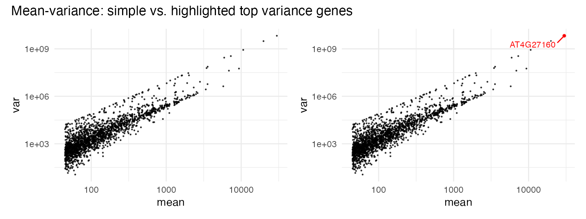
# with log transform and colouring by phylostratum
myTAI::plot_mean_var(example_phyex_set |> myTAI::tf(log1p),
colour_by = "strata") +
ggplot2::guides(colour = guide_legend(ncol=2))Individual gene expression profiles
# side by side: manual coloring vs strata coloring
p1 <- myTAI::plot_gene_profiles(example_phyex_set, max_genes = 10, colour_by = "manual")
p2 <- myTAI::plot_gene_profiles(example_phyex_set, max_genes = 10, colour_by = "strata")
p1 + p2 + plot_annotation(title = "Gene profiles: manual vs. strata coloring")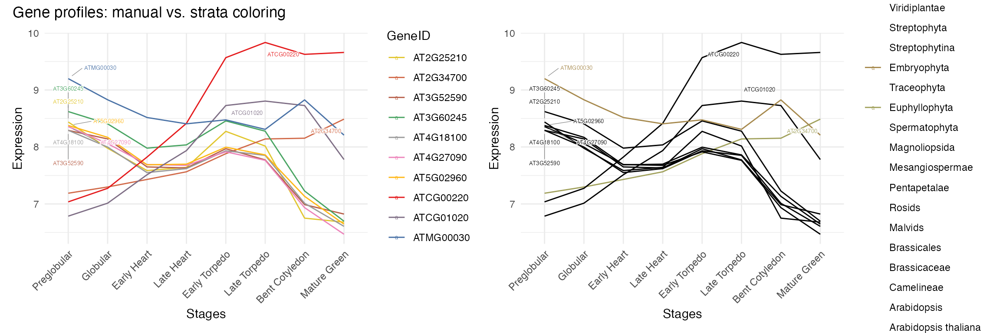
# stage colouring with standardized log transformation
myTAI::plot_gene_profiles(example_phyex_set, max_genes = 10,
transformation = "std_log", colour_by = "stage")
# faceted by phylostratum
myTAI::plot_gene_profiles(example_phyex_set, max_genes = 1000,
colour_by = "strata", facet_by_strata = TRUE, show_set_mean = TRUE,
show_labels = FALSE)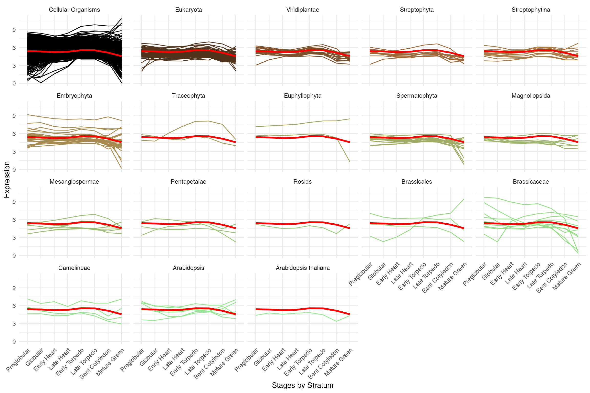
These plots are examples of plots that myTAIv2 can
generate. To check out the functions, use ? before the
function (i.e. ?myTAI::plot_mean_var().
You can also find a list of plotting functions in Reference.
Single cell RNA-seq data
Most of the plotting functions shown above also apply for single cell
RNA-seq data, as long as it is a ScPhyloExpressionSet
object.
Let’s create an example single-cell dataset and explore the plotting capabilities:
# Load example single-cell data
data(example_phyex_set_sc)
example_phyex_set_sc## PhyloExpressionSet object
## Class: myTAI::ScPhyloExpressionSet
## Name: Single Cell Example
## Species: Example Species
## Index type: TXI
## Cell Type : TypeA, TypeB, TypeC
## Number of genes: 1000
## Number of cell type : 3
## Number of phylostrata: 10
## Total cells: 1000
## Cells per type:
##
## TypeA TypeB TypeC
## 341 335 324
## Available metadata:
## groups: TypeA, TypeB, TypeC
## day: Day1, Day3, Day5, Day7
## condition: Control, Treatment
## batch: Batch1, Batch2, Batch3
# Check available identities
cat("Available identities for plotting:\n")## Available identities for plotting:
print(example_phyex_set_sc@available_idents)## [1] "groups" "day" "condition" "batch"
# Set up custom color schemes for better visualization
day_colors <- c("Day1" = "#3498db", "Day3" = "#2980b9", "Day5" = "#1f4e79", "Day7" = "#0d2a42")
condition_colors <- c("Control" = "#27ae60", "Treatment" = "#e74c3c")
group_colors <- c("TypeA" = "#e74c3c", "TypeB" = "#f39c12", "TypeC" = "#9b59b6")
example_phyex_set_sc@idents_colours[["day"]] <- day_colors
example_phyex_set_sc@idents_colours[["condition"]] <- condition_colors
example_phyex_set_sc@idents_colours[["groups"]] <- group_colorsSingle-cell signature plots
# Basic signature plot showing TXI distribution across cell types
myTAI::plot_signature(example_phyex_set_sc)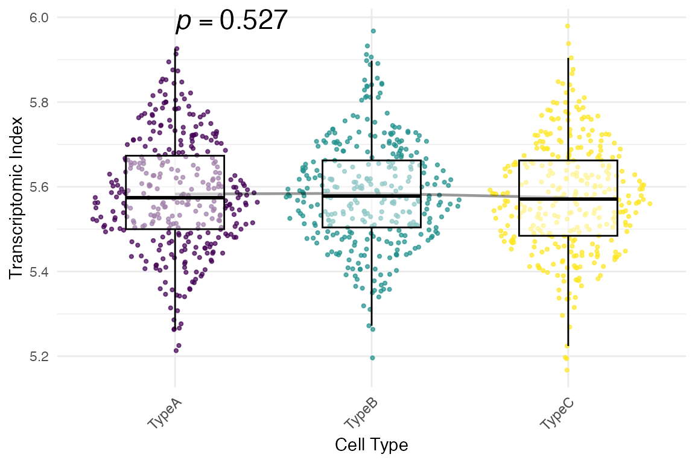
# Plot without showing individual cells (just means)
myTAI::plot_signature(example_phyex_set_sc, show_reps = FALSE)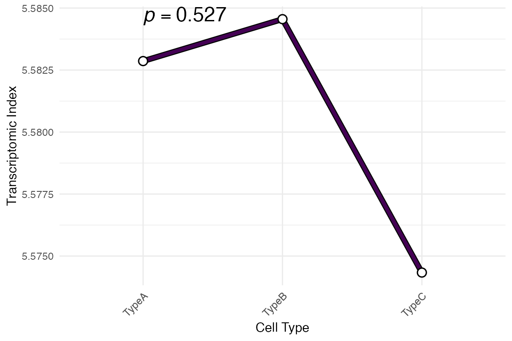
# Plot TXI distribution by developmental day instead of cell type
myTAI::plot_signature(example_phyex_set_sc, primary_identity = "day", show_p_val = FALSE)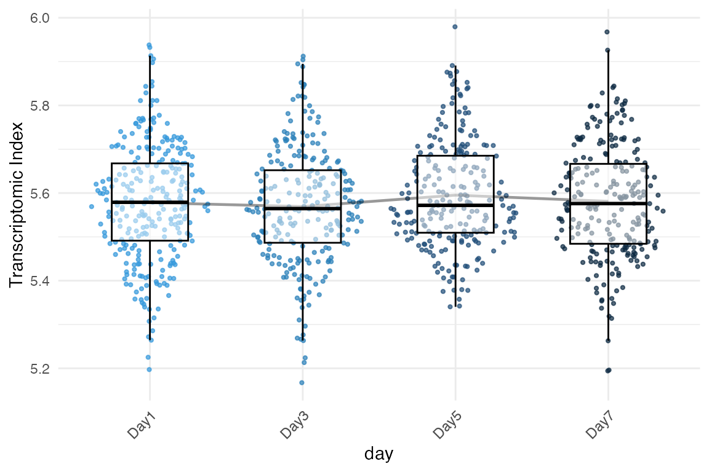
# Plot TXI distribution by experimental condition
myTAI::plot_signature(example_phyex_set_sc, primary_identity = "condition", show_p_val=FALSE)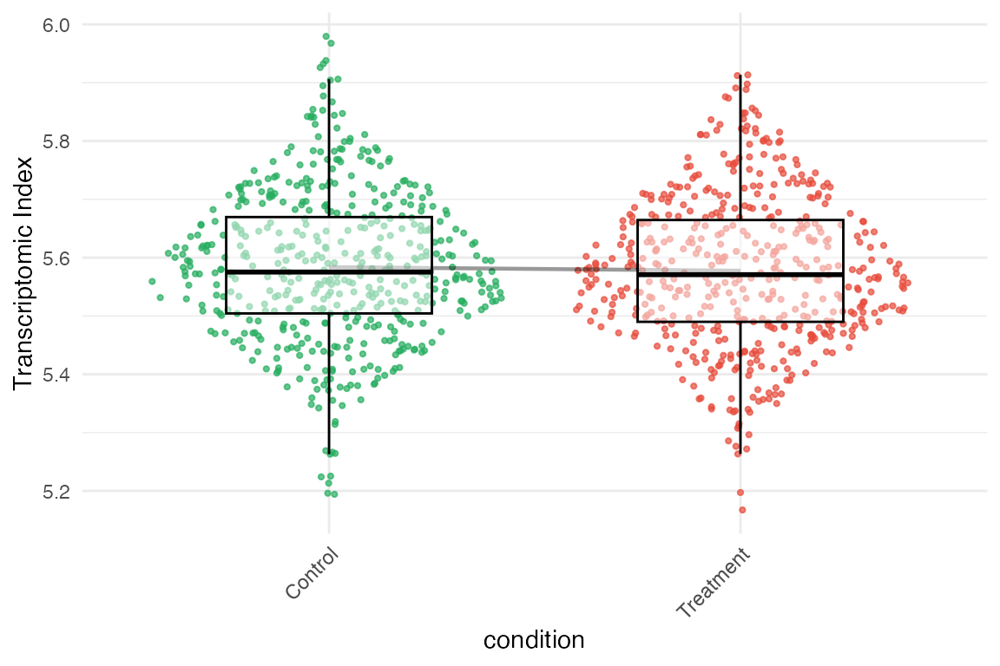
You can use a secondary identity for either coloring or faceting to create more informative plots:
# Plot by day, colored by condition
myTAI::plot_signature(example_phyex_set_sc,
primary_identity = "day",
secondary_identity = "condition",
show_p_val=FALSE)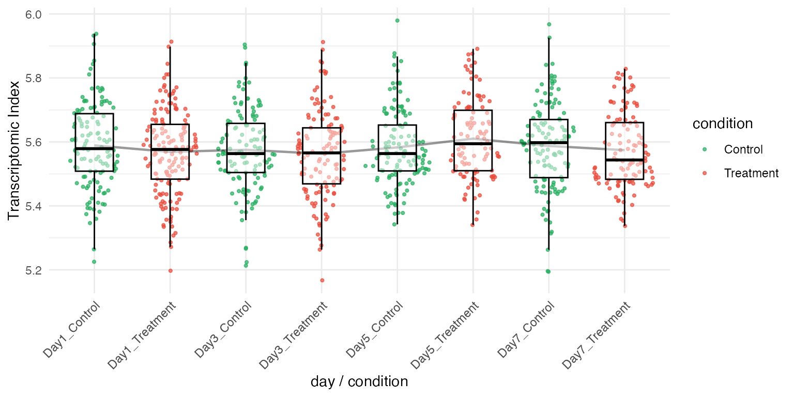
# Plot by day, faceted by condition
myTAI::plot_signature(example_phyex_set_sc,
primary_identity = "day",
secondary_identity = "batch",
facet_by_secondary = TRUE,
show_p_val = FALSE)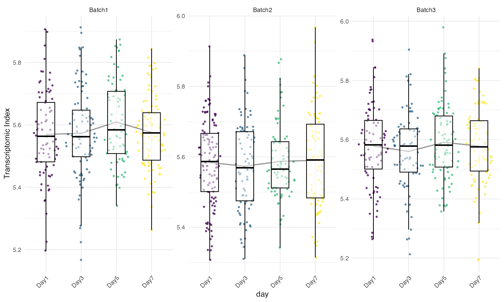
Other single-cell visualizations
The gene heatmap function also works with single-cell data and can show individual cells or be aggregated:
# Gene heatmap for single-cell data (aggregated by cell type)
myTAI::plot_gene_heatmap(example_phyex_set_sc, top_p = 0.1, cluster_rows=TRUE)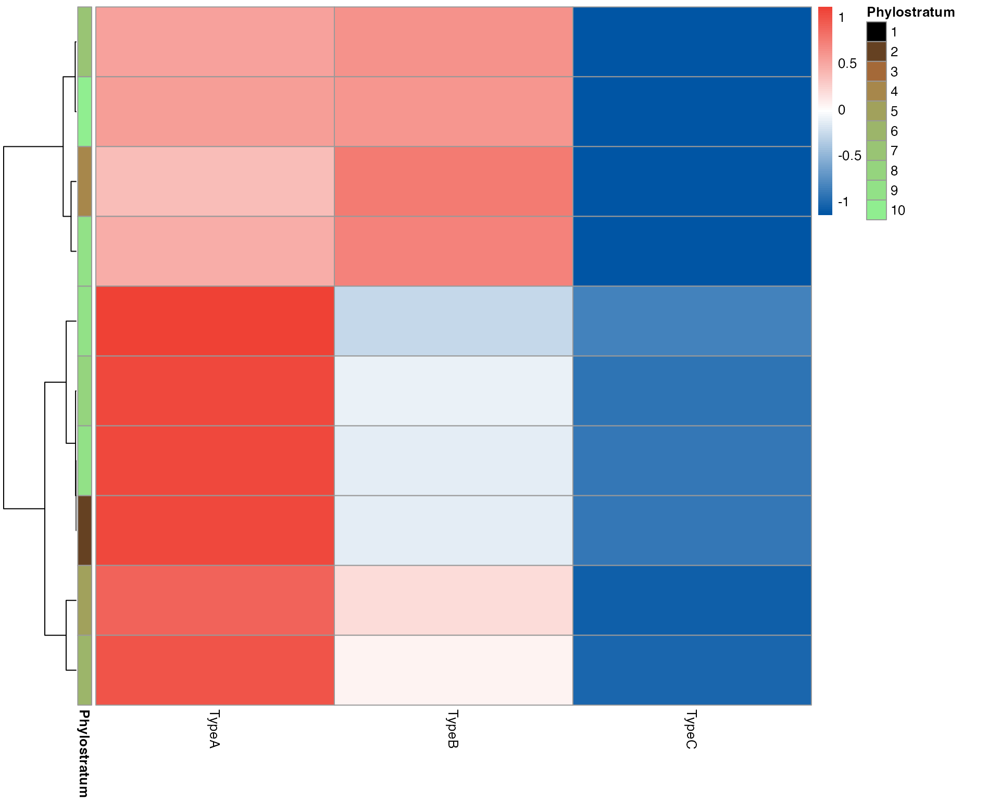
# Gene heatmap showing individual cells (subsampled)
myTAI::plot_gene_heatmap(example_phyex_set_sc, show_reps = TRUE, max_cells_per_type = 10, top_p = 0.05, cluster_rows=TRUE)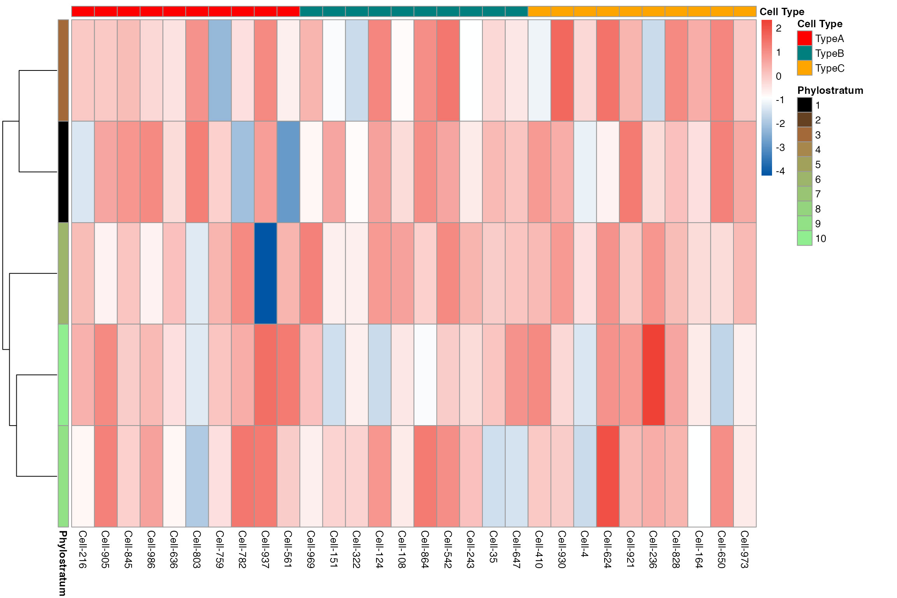
# Change identity to "day" and plot heatmap grouped by developmental time
example_sc_by_day <- example_phyex_set_sc
example_sc_by_day@selected_idents <- "day"
myTAI::plot_gene_heatmap(example_sc_by_day, show_reps = TRUE, max_cells_per_type = 8, top_p = 0.05, cluster_rows=TRUE, show_gene_ids=TRUE, std=FALSE)
Single-cell plotting tips:
- Use
primary_identityto specify which metadata column to plot on the x-axis - Use
secondary_identitywithfacet_by_secondary = TRUEfor faceted plots - Use
secondary_identitywithout faceting for colour-coded plots - Set custom colors with
set_identity_colours() - Check available metadata columns with
available_identities()
Plot away!